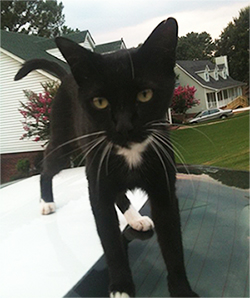

Lost Your Kittie?
Step 1: Please enter your kittie's information.
Be as descriptive as possible.
Step 3: Please review your ad.
Oreo
Male
Black and White, Tuxedo
Missing since 10/30/2014
Laurel District, Oakland
5115.981.1222
$200 Reward